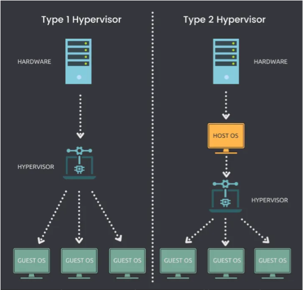

Define the role of a hypervisor in virtualization.
Differentiate between cloud deployment models.
Summarize client-side virtualization.
Differentiate between cloud service types.
Categorize the many types of SaaS applications.
First, Complete CompTIA A+ Lesson 7
If the embed doesnt work, use the button instead.
Virtualization
Virtualization is the process of running a virtual instance of a computer system on its own partition. It creates a software-based version of something such as an application, server, network, or storage. For example, this is often used to run multiple operating systems on a single computer at the same time, such as running a version of Windows and a version of macOS on the same system. Using virtualization can help reduce technology expenses and create smoother operating processes.
Virtual Machines
To understand what a virtual machine is, you have to consider the traditional alternative—the physical machine. Usually, a single computer physically occupies space on a desk and runs a single operating system. In contrast, a virtual machine is just a file (also known as an image) that acts like a computer but in reality only exists virtually. In this way, it's like having one computer inside of another. A single computer can run a variety of virtual machines to greatly enhance what it's typically able to do. These virtual machines give the user the same experience as if they were running the program on a dedicated computer.
Virtual machines don't require any special hardware, but each machine you install does create a drain on your system's available resources. You're limited only by how much the host computer can handle. Multiple virtual machines can run on the same computer, but it's important to make sure you have enough resources on the host computer to support them.
All the virtual machines on your computer will access the same physical hardware in order to run.
Some things to consider when creating virtual machines are the amount of storage space on the computer, the amount of RAM available, the quality of the video card, and the quality of the processor.
Hypervisors
Hypervisors, also known as virtual machine managers, are the software that creates and manages virtual machines. There are two main types of hypervisors:
Type 1 hypervisors, also known as bare-metal hypervisors, run directly on the host's hardware. They have direct access to the computer's resources and can run multiple operating systems simultaneously. Examples of Type 1 hypervisors include VMware ESXi, Microsoft Hyper-V, and Citrix Hypervisor.
Type 2 hypervisors, also known as hosted hypervisors, run on top of an existing operating system. They are typically used on desktop computers and are less powerful than Type 1 hypervisors. Examples of Type 2 hypervisors include Oracle VirtualBox, VMware Workstation, and Parallels Desktop.

Type 1 hypervisors are generally preferred in enterprise environments because they are more powerful and efficient than Type 2 hypervisors. However, Type 2 hypervisors are more user-friendly and can be used on a wider range of hardware.
Cloud Computing
Cloud computing has been a revolutionary shift in the way that individuals and companies operate. Instead of storing everything locally on each individual machine, cloud computing allows you to do much of your work and storage over the internet. Things that are stored and shared in this way are said to be in the cloud.
Cloud Deployment Models
Public Cloud: This is a cloud infrastructure that is available to the general public. The cloud service provider is responsible for managing and maintaining the infrastructure.
Private Cloud: This is a cloud infrastructure that is dedicated to a single organization. The organization has complete control over the infrastructure and is responsible for managing and maintaining it.
Hybrid Cloud: This is a combination of public and private cloud infrastructures. The organization can use the public cloud for non-sensitive workloads and the private cloud for sensitive workloads that require enhanced security and compliance.
Community Cloud: This is a cloud computing model that involves sharing computing resources among organizations with common interests, such as a particular industry or geographical location.
Cloud Service Types
Infrastructure as a Service (IaaS): This provides users with virtual machines, storage, and network resources. Users can install and configure their own operating systems, applications, and software.
Platform as a Service (PaaS): This provides users with a platform for developing, running, and managing applications. Users do not have to worry about managing the underlying hardware and operating system.
Software as a Service (SaaS): This provides users with access to software applications over the internet. Users do not have to install or maintain the software on their own devices.
Key Benefits of Cloud Computing
Lower Costs: With cloud computing, you pay only for the services you need as long as you need them.
Easier Collaboration: With cloud computing, it's simple for people to work together even when they're not geographically close.
Data Backup: If files are kept in the cloud, it's easier to make sure that you don't lose them. Even if your individual machine crashes, files can be restored from a cloud location.
Data Security: Cloud computing has many technologies that help protect your data so that only authorized individuals can access it.
The SaaS Model
In a typical SaaS model, the software is hosted on a central server and users are charged a monthly fee to gain access to it. Under this model, the end user doesn't need a license because everything is hosted in the cloud. The end user also doesn't need any particular kind of hardware to host the software as it's taken care of by the host company.
Many companies like this business model because it creates a steady stream of monthly revenue. Since the customer is only renting the software, access can be revoked if the customer stops paying. This is in contrast to traditional software, which is purchased for a one-time fee.
Categories of SaaS Applications
CRM management software such as Salesforce.
Office tools such as Microsoft Office 365 (Word, Excel, and PowerPoint).
Online storage solutions such as Dropbox, Google Drive, and Microsoft OneDrive.
Customer service software such as Zendesk.
Electronic signature and document management software such as DocuSign.
Real-time messaging solutions such as Slack.
Virtual meeting solutions such as GoToMeeting and Zoom.
HR tools such as Workday.
Course management tools such as Blackboard.
Survey creation tools such as Qualtrics.
Email services such as Gmail, HubSpot, and Sendinblue.